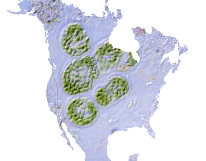

Four Kinds of Aliens
by phil on Friday Jan 11, 2013 8:06 PM

So much of the excitement about futurism is in answering age-old grand questions about life, such as, "Are we alone?" However, there's really four types of alien life-forms that we could encounter, most of which aren't that exciting.
At the most basic level, there's things like pulsing bacterium, oxidizing froth, and plants. Pretty much discovering life that is immobile or semi-immobile is nearly equivalent to discovering a planet with interesting chemicals on it, which happens every so often. Encountering this would simply tell us that automata is easier to evolve than we thought. This discovery would be as interesting as discovering multi-cellular organisms on Earth that don't need oxygen. That discovery barely registered a blip in the news.
The next level of interestingness would be the discovery of living things like camels, reindeer, or fish. These are independently moving, non-vegetable-style animals, i.e. the kinds of things that could become pets. That would be interesting to some extent, but after the initial excitement, they would spark as much curiosity for humans as the presence of strange marine life. There are at least 750,000 undiscovered species in our oceans, and that number is likely to remain that way for a long time. At this point, we could say, "We're not alone," but try asking a solitary sailor on a boat far into the ocean if they feel alone. They likely wouldn't get any solace knowing there are strange creatures swimming beneath them.
The next level would be aliens that are sentient and advanced enough to have a culture. Perhaps they don't have any skills for space travel, so they're definitely less intelligent than we are. At this point, "Are we alone?" An answer to that could be similar to the discovery of the New World by Europeans. During that era, the world must have seemed as large to humans as our universe seems to us today, and so to discover a whole new continent with previously unknown living people and culture must have been mind-blowing. And yet, it's difficult to find stories about just how earth-shattering this was to the scientific community or even ordinary people.
Finally, the forth level would be sentient aliens that have already dominated space travel. In which case, they would have discovered us first, or they already have. That may provide us with the similarly wondrous scenes from science-fiction movies like Contact. But this outcome is not the likely scenario for discovering aliens. It's ten times more likely that we'd discover a new world of savages, a hundred times more likely we'd discover a new ocean of marine life, and a thousand times more likely we'd simply discover exotic bacteria.